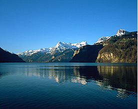

ECCB'12 KEYNOTES:
Søren Brunak
Technical University of Denmark
Aaron Ciechanover
Technion - Israel Institute of Technology
Barry Honig
Columbia University, New York
Laurent Keller
University of Lausanne
Gene Myers
MPI of Molecular Cell Biology and Genetics, Dresden
Mihaela Zavolan
Biozentrum University of Basel & SIB
CONFERENCE CHAIRS:
Torsten Schwede (chair)
Dagmar Iber (co-chair)
ECCB'12 is organized by:


Lucerne Lake, Panorama and more
On the two days following the ECCB'12 meeting in Basel (Sep 13th-14th), a group of attendees is heading for a 2-day trip to experience Switzerland at its most original and enjoy stunning views.

(C) wanderland.myswitzerland.ch
Feel free to join (privately) for this leisure trip. The following page should help you to plan your trip:
Plan
After closing of the ECCB12 conference, we will take the train to Brunnen (Schwyz). From there, many nice trips can be taken by foot (railway alternative), canoe, (steam-)boat or even visiting one of the world's largest underground cave systems. We will stay in the same hotel for two nights, making many variants possible to the trips we suggest. This is a private endeavour and not linked to the ECCB12 organisation. You therefore must book your hotel and train personnally (see details below).
Preparations ahead of the conference
Let us know if you are joining for the Swiss Experience via email. Book yourselves into one of the hotels around Brunnen (Schwyz). You are free to choose any accomodation available, but September is a very busy period and large groups are not accomodated easily. We, therefore, have reserved 25 double rooms in Hotel Bellevue, which is situated directly at the lake and offers nice views, but is an old hotel.
Weblinks:
1. Let us know by email that you are joining.
2. Book your room at Hotel Bellevue(single 90 CHF, double 120 CHF), or any other hotel in Brunnen (Arrival: evening of Sep 12th, Departure: Sep 14th - or later ..)
How to get there and first evening
After conference has been closed make your way to the SBB train station in Basel (Tram 2, 6). Then take train to Brunnen (ca. 47 CHF). Train tickets in Sitzerland can be purchased online beforehand (SBB), or at the train station (not in the train).
Check into your accomodation. We'll meet again for dinner around 20:00 (location to be disclosed) and a short planning meeting for laying out the options for the following two days.
Trip Suggestions:
Map:
 (C) myswitzerland.ch
(C) myswitzerland.ch
First day – Swiss Panorama Hike
Our trip will start off at the boat landing in Brunnen, a small town very characteristic of central Switzerland. We will take the boat to Rutli, the birthplace of Switzerland and hike up to Seelisberg (medium difficulty). After enjoying the stunning panorama, we will continue hiking to Bauen, the whole hike is supposed to last 3.5hrs, which gives us plenty of time to take pictures, chat and take breaks as necessary. In the evening there will be a boat taking us back to Brunnen, where we will have dinner (details see weblinks below).
First day - Alternative to hiking
Alternatively if you prefer a trip on a step cogwheel railway to walking then take the boat to Beckenried/Luzern. Exit at first stop 'Treib' and take the Treib-Seelisberg railway.
Join a dairy tour to buy some mountain cheese, visit the Beroldingen Castle or go to see the beautiful lake (and swim there).
To get back to the hotel take the Treib Seelisberg railway back to Treib and from there the boat back to Brunnen (last trip: 18:34).
Weblinks hiking
Further details: Let us know whether you are interested in the dairy tour or hiking (when registering)
Second day – Hiking/Canooing/Visit to Caves
- Trip A – visit one of the world's most extensive cave system (190km!)
Take the bus to Muotathal, Hölloch (about 40 min.), we then meet at the caves to get the tickets (group rate).
Weblink
caves
-
Trip B – Hiking
Boat trip to Tellpass, hike (medium level) to Fluelen (see map above [“Day 2” route], potential swim in the lake), bus (public transport) back to Brunnen
Weblink
- Trip C - Canoeing trip
Various guided tours can be taken starting from Brunnen (various offers see website, click on “kanutouren”).
Weblinks
- Trip to visit Victorinox (Swiss Knife manufacturer) and Felchlin - a chocolate manufacturer in Schwyz a town in the nearby "Swiss Knife Valley", may be after canoeing in the afternoon.
Last, but definitely not least
Liability Disclaimer
This is a private leisure trip - not linked to ECCB. The trip suggestions on this page are not linked to the ECCB12 conference or any member of the organising comittee not the contact people listed on this page or are connected to this trip. You accept that you are personally responsible for your safety, accomodation and all fees arising from the activities during these days. Insurances must be also dealt with personally. In summary: This is a private leisure trip with no liabilities for ECCB12 whatsoever. Your participation is at your own risk and responsability.